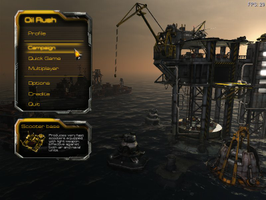
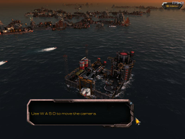

Oil Rush
Dieser Artikel wurde für die folgenden Ubuntu-Versionen getestet:
Ubuntu 14.04 Trusty Tahr
Zum Verständnis dieses Artikels sind folgende Seiten hilfreich:
Oil Rush  ist ein auf der Unigine Engine basierendes Echtzeitstragiespiel. Die Welt ist nach der Postapokalypse überschwemmt. Es gilt Plattformen und Rohstoffe zu kontrollieren, die Produktion zu verbessern, Verteidigungsanlagen zu errichten die eigenen Einheiten ins Gefecht zu entsenden...
ist ein auf der Unigine Engine basierendes Echtzeitstragiespiel. Die Welt ist nach der Postapokalypse überschwemmt. Es gilt Plattformen und Rohstoffe zu kontrollieren, die Produktion zu verbessern, Verteidigungsanlagen zu errichten die eigenen Einheiten ins Gefecht zu entsenden...
Das Spiel bietet einen Multiplayermodus über LAN und Internet. Eine deutsche Version ist seit Mitte Juni 2012 Verfügbar. Die auf der Engine basierenden Benchmarks können unter Linux getestet werden.
|  |  |
| Hauptmenü | Tutorial |
Installation¶
Binärpaket¶
Nachdem man das Spiel auf unigine.com erworben und nach dem Login heruntergeladen  hat macht man die Datei OilRush-VERSIONSNUMMER.run ausführbar [1]. Anschließend das Spiel nach ~/Spiele/OilRush installieren [2]:
hat macht man die Datei OilRush-VERSIONSNUMMER.run ausführbar [1]. Anschließend das Spiel nach ~/Spiele/OilRush installieren [2]:
./OilRush-VERSIONSNUMMER.run
Debian-Paket¶
Das aktuelle Paket nach dem Kauf von unigine.com herunterladen und installieren [3].
Anschließend den Product Key, welchen man auf unigine.com einsehen kann, eingeben.
Desura¶
Nachdem man das Spiel über die Internetseite oder den Client erworben hat kann das Spiel installiert [4] und über diesen gestartet werden.
Das Spiel kann über "Anwendungen -> Spiele -> Oil Rush" gestartet werden.
Indie Royale - the Fall Bundle¶
Die Datei OilRush-1.12-deluxe.run von der persönlichen Seite herunterladen. Anschließend das Binärpaket installieren.
Hinweis:
Mit dem Erwerb des Spiels über diesen Vertriebsweg erhält man einen Schlüssel um das Spiel mit Desura verwenden zu können.
Ubuntu Software-Center¶
Oil Rush kann zudem über das Ubuntu Software-Center gekauft werden. Diese Art der Installation ist insbesondere für den Neueinsteiger bequem. Man sollte hierzu aber nicht unerwähnt lassen, dass bei dem Kauf über diesen Vertriebsweg kein Key mitgeliefert wird, der eine Crossplattform-Lizenz beinhaltet. Updates werden aber wenige Tage nach erscheinen zur Verfügung gestellt.
Update¶
Updates können nach dem Login von der Herstellerseite heruntergeladen und aufgespielt werden.
Erweiterung¶
Oil Rush Tower Defense Map Pack¶
Die Erweiterung auf unigine.com kaufen und nach der Aktivierung herunterladen . Die Datei oilrush_dlc_td_map_pack.ung anschließend im Installationsverzeichnis in den Ordner data kopieren.
Tipps & Tricks¶
Desura¶
Sofern man das Spiel im Unigine online store erworben hat kann man dieses auf desura.com aktivieren. Hier den Product Key ohne die Bindestriche eingeben - z.B. UBUNTUUSERSRULES.
Tastenkürzel¶
| Tastenkürzel | |
| Taste(n) | Funktion |
 und und  | Einheiten bewegen. |
 | Karte |
| Alt | Status der Einheiten einsehen. |
| + + - | Spielgeschwindigkeit erhöhen/verringern |
| W + S + A + D | Kamera bewegen - ⇧ gedrückt beschleunigt die Bewegung. |
| Q + E | Kamera rotieren. |
| Nächsten wichtigen Punkt besuchen. | |
| ⌫ | Kameraeinstellungen zurücksetzen. |
| Strg + 1 | Plattform 1 auswählen - weitere Werte möglich. |
| F1 | Allgemeine Informationen zur Einheit und AI (de)aktivieren. |
| F2 | Pause mit voller Kamerakontrolle. |
| F4 | Levelneustart |
| F9 | GUI (de)aktivieren. |
| F11 | Bildschirmfoto der aktuellen Szene ohne GUI anfertigen. Speicherort: ~/.oilrush/screenshots |
| F12 | Bildschirmfoto aufnehmen. |
Weitere Tastenkürzel sind dem Handbuch zu entnehmen.

Infobox¶
| Oil Rush | |
| Originaltitel: | Oil Rush |
| Genre: | Strategie |
| Sprache: | |
| Veröffentlichung: | 2011 |
| Publisher: | Unigine Corp |
| minimale Systemvoraussetzungen: | 2 GHz Prozessor / 1GB RAM / OpenGL 3-fähige Grafikkarte mit 256 MB RAM / 1GB Festplattenspeicher |
| Medien: | Download |
| Strichcode / EAN / GTIN: | - |
| Läuft mit: | nativ |
- Erstellt mit Inyoka
-
 2004 – 2017 ubuntuusers.de • Einige Rechte vorbehalten
2004 – 2017 ubuntuusers.de • Einige Rechte vorbehalten
Lizenz • Kontakt • Datenschutz • Impressum • Serverstatus -
Serverhousing gespendet von